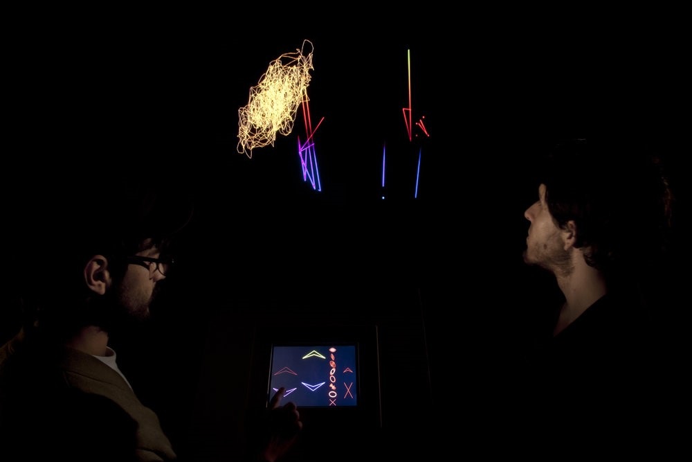

En el ámbito físico es una propagación de energía mecánica que se basa en modificaciones de la presión atmosférica que se difunden con una frecuencia y una amplitud determinada a través de un medio, en este caso el aire. Según estas frecuencias y niveles de sobrepresiones puede llegar a afectar la salud, más allá del significado como tal, conforme a nuestras experiencias en general relacionamos el ruido con incomodidad, angustia o desorden; físicamente lo delimita la intensidad y volumen del sonido emitido. Cuauhtzin Alejandro Rosales Peña Alfaro habla del ruido que pasa a ser un elemento de la contaminación a uno artístico. Brinda significado al sonido que tiene un elemento físico: la vibración, y uno perceptual. unidos por el fisiológico (transformaciones de energía) (2020-p.p. 89). María José Riofrío Proaño (mayo - 2022) ratifica lo que experimenté al estar trabajando lejos de la ciudad, que "el ruido es un ambiente saturado de sonoridades" (p.p. 63) planteándonos un ejercicio interesante de escucha, para que cada uno se apersone de la experiencia estética del ruido. El "oído como el único sentido perenne en la vida, cuya experiencia es indefinible, inasible e intrínseca; no se puede huir del sonido, este rodea y encierra al ser humano (...) es capaz de captar y empezar a dejarse ser con el ruido, al revelarse este encuentro el sujeto siente más de lo que antes se limitaba a experimentar" (p.p. 63, 64) Implementando la fotografía como pieza principal en la exploración, podemos identificar como ruido visual los elementos que distraen la atención del espectador en las fotografías y/o videos, además del ruido digital se produce un efecto granulado obteniendo resultados con menor calidad. Puede ocurrir en lugares muy oscuros sin cambiar la velocidad de captura o el tiempo de exposición y en ocasiones por sobrecargar la cámara (Cadena L.M., junio 2020). Actualmente existe mayor facilidad de tomar fotos y videos donde ya no se tiene el mismo cuidado de evitar este 'ruido' y nos acostumbramos a la contaminación visual y obligarnos a consumir más información en menos tiempo (así no sea de nuestro interés o agrado). (Rosales C., 2020, p.p. 99). Muchos no toman conciencia de estos elementos alrededor (visuales y sonoros) por la misma cotidianidad.
Lo que se considera silencio es lo contrario al ruido, se asemeja en la mayoría de ocasiones a la tranquilidad, pero en estos espacios seguimos encontrando sonidos solo que con vibraciones menores y que desde mi perspectiva son lejanos al diario vivir. Juan Granados Valdéz plantea que el silencio se puede considerar falta de comunicación, pero también necesario creando pausas entre palabras y/o notas y permiten un ritmo en el mensaje o en la música. La obra 4'33'', (1952) de John Cage, se realiza en tres momentos o movimientos y fue su obra más polémica debido a que en esta los músicos no tocan ningún instrumento, también se aprecia la partitura vacía, con esto pretende compartir la idea que “el silencio no existe”. E invita a los espectadores a sentir los sonidos cotidianos de forma artística, que en su mayoría son propios, como lo resalta Lampkin en el blog es “una experiencia sensoria, mística, espiritual” (2020).
Para comenzar se conoce que el sonido es la variación de la presión en el aire o alteración física en un medio (líquido, sólido o gas) y esta puede ser detectada por el oído. Cómo se procesan e interpretan los sonidos ocurre en el cerebro, este decide si agradable o no, débil o fuerte. Es donde entran las culturas y la individualidad. El sonido físicamente es igual al ruido, pero se le da un valor diferente influenciado ya sea por factores sociales o de territorio, como las creencias religiosas y políticas atribuyendo una "individualidad en una experiencia estética" (Riofrío M.J., 2022, p.p. 66). En las obras: Partitura sonora 2009, y Sonorama 2011 de Alba Fernanda Triana interesada en difundir la estética musical, en la recopilación de sus creaciones emplea la acústica, las técnicas con ondas y variaciones del sonido. Con un proceso de producción híbrido, pero utilizando el sonido como principal componente, a pesar de que es intangible, lo usa como material en la obra y medio de difusión; ambas tienen la particularidad de ser instalaciones tecnológicas e interactivas, donde la participación de los espectadores sobre dichas instalaciones es vital para que la obra tenga sentido y cumpla con lo planteado inicialmente.
La interacción sucede a través de pantalla táctil, con botones permite gran libertad y facilidad de jugar con estas dando la posibilidad de crear melodías con los colores y las notas que se generan. Se ofrece la oportunidad a los visitantes de acercarse al ámbito musical así no tengan conocimientos de esta área. Las obras son atractivas igualmente por el espacio usado que se modifica para evitar distracciones de luz ajenas a la obra y enriquecer las prácticas de los visitantes. Se crea una alianza entre la música tradicional y la moderna. Sus composiciones ocurren bajo la narrativa de cada persona, porque vivimos el arte según nuestras experiencias y territorialidades, todos los espectadores tienen de base una nota o ritmo definido por Triana que durante el trayecto varía el tiempo de cada visitante lo que hace a la interacción y resultado sea distinto. Triana en sus obras busca transmitir ideas logrando transformar y generar emociones en las personas que viven la obra. Es muy interesante ver la obra de Partitura Sonora donde emplea una pantalla simulando el cuadernillo de las partituras, de cierto modo queriendo volver a lo tradicional o lo físico (el papel) y también brindándole al espectador la experiencia de lo análogo al ver las animaciones cuando se cambia de hoja, pero en lugar del pentagrama y las notas como las conocemos, ella las recrea con círculos de colores que se desvanecen cuando se deja de escuchar la nota. Invita a los espectadores a vivir la música de un modo distinto, activo y libre. Hay quienes consideran que la obra de Sonorama es una evolución de la Partitura sonora, mejorando la interacción con más posibilidades de cambio de sonido empleando más botones en la pantalla, y los patrones que se dibujan durante esta son más dinámicos creando figuras abstractas y llamativas, no únicamente los círculos presentes en la partitura sonora. Se puede llegar a entender que los “dibujos” resultantes serían una traducción visual a los sonidos complementando la obra visualmente con lo audible. Son una gran mezcla de tecnología, creación sonora, colaboración y conocimientos. Otra característica de estas obras es que son irrepetibles, por el contexto del año realizadas, no es muy lejano pero la tecnología avanza muy rápido, y puede que en la actualidad no se le da la misma importancia o no llame la atención de tantos espectadores como si pasó en 2009 y 2011 respectivamente, se puede considerar que los participantes tomen los patrones de la música popular de esos años hasta decisiones colectivas, que si se trae actualmente se transformaría por la influencia de las nuevas redes sociales o los servicios de streaming que existen y no solo por música comercial o clásica, al igual que las decisiones pasan a ser individuales gracias al aislamiento y restricciones de la pandemia.
